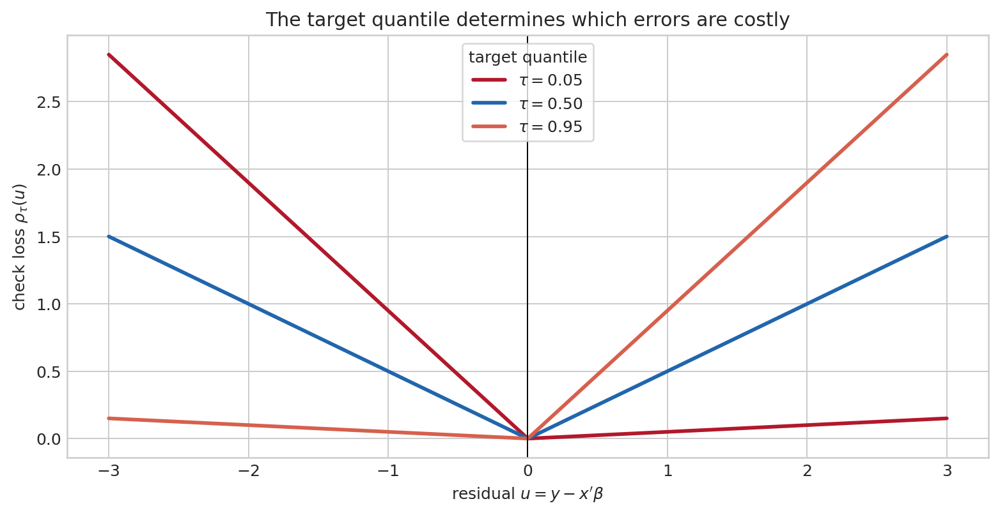
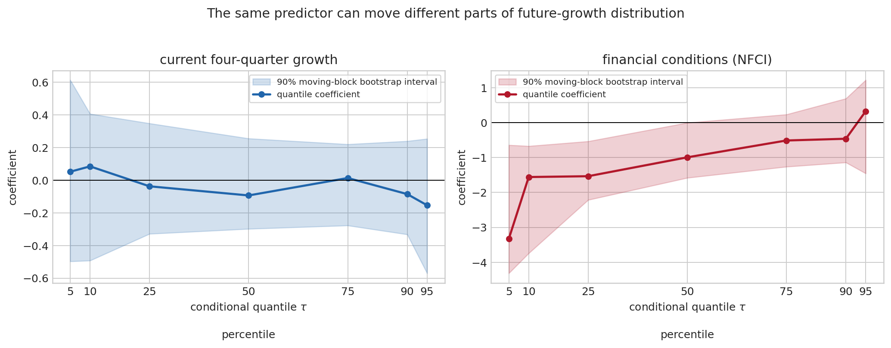
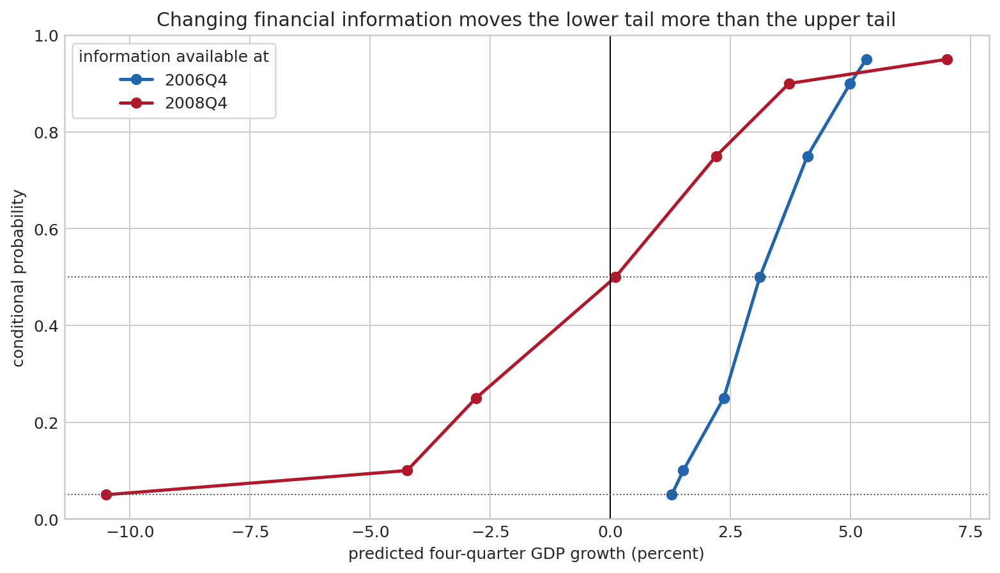
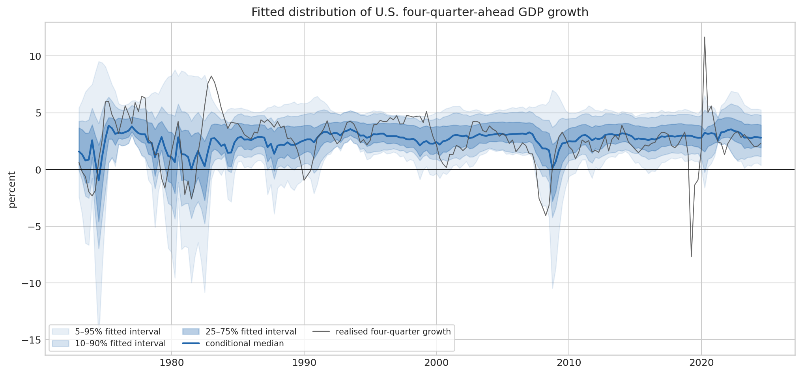
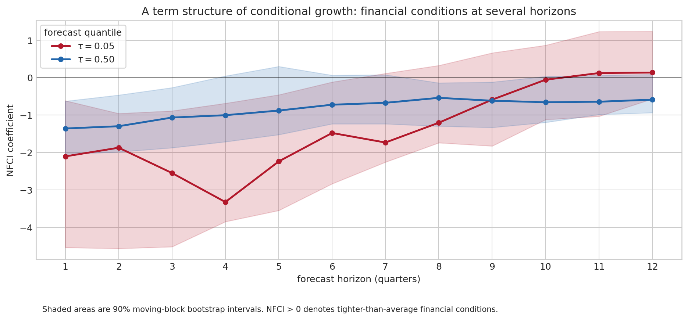
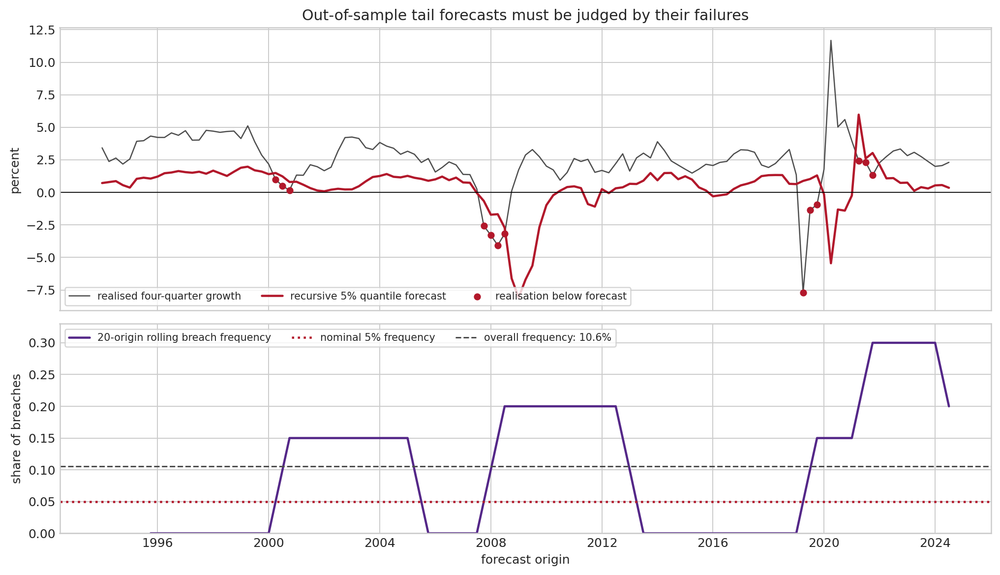
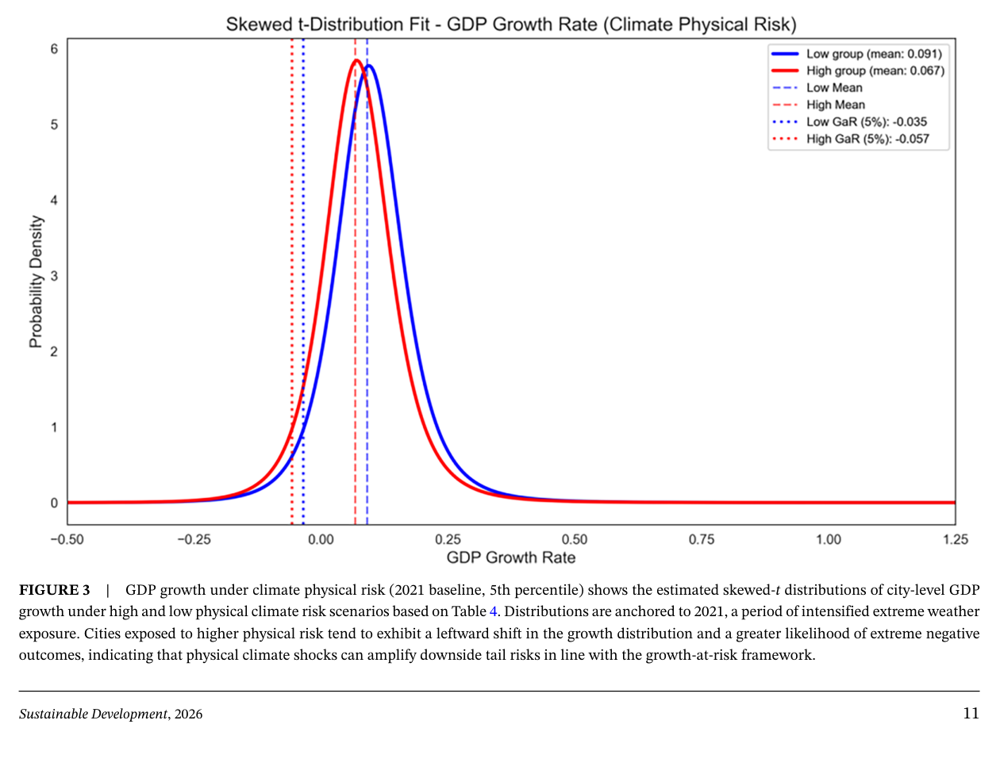
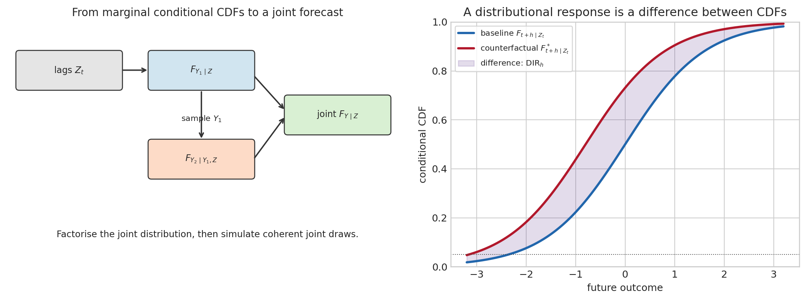

8 Quantile Regressions and Growth-at-Risk
Suppose that two forecasters both expect U.S. output to grow by two percent over the coming year. One puts the fifth percentile of growth at \(1.2\) percent; the other puts it at minus \(4\) percent. Their central forecasts agree, yet they are describing markedly different economies. For a government deciding how much fiscal space to preserve, a central bank assessing financial fragility, or a firm planning investment, the difference is not a detail around the forecast. It is the risk that matters.
Growth-at-Risk (GaR) takes that difference seriously. Rather than asking only for the conditional mean of future growth, it estimates selected points of its conditional distribution, especially its lower tail. The empirical result that made the literature influential is equally simple: financial conditions tend to contain more information about bad growth outcomes than about very good ones (Adrian, Boyarchenko, et al. 2019). Quantile regression supplies a direct way of putting that proposition to the data.
The chapter first builds the estimator from the familiar median, then develops GaR as a conditional tail forecast. It uses a small U.S. exercise with public FRED data, extends it across horizons in the spirit of local projections, and finally discusses the climate-risk application. The point is not that a fifth percentile is an oracle. It is a well-defined forecast object, with its own assumptions, sampling limits, and methods of validation.
8.1 A forecast can miss the risk that matters
Let \(G_{t,t+h}\) denote real GDP growth between today \(t\) and a future date \(t+h\). A standard forecast targets
\[ E(G_{t,t+h}\mid\mathcal I_t), \]
the conditional mean given the information available today, \(\mathcal I_t\). This is the right object if squared forecast errors are the relevant loss and the decision-maker treats positive and negative misses symmetrically. It is not enough when the question concerns recession risk. The mean can remain close to normal while the left tail opens up.
For a probability level \(\tau\in(0,1)\), the conditional quantile is defined by
\[ Q_{G_{t,t+h}\mid\mathcal I_t}(\tau) =\inf\{g:\Pr(G_{t,t+h}\leq g\mid\mathcal I_t)\geq\tau\}. \]
The Growth-at-Risk at level \(\tau\) is this lower conditional quantile:
\[ \operatorname{GaR}_{t,h}(\tau)=Q_{G_{t,t+h}\mid\mathcal I_t}(\tau). \]
At \(\tau=.05\), the statement is precise: conditional on the model and information set, growth is expected to fall below \(\operatorname{GaR}_{t,h}(.05)\) in five percent of comparable forecast situations. GaR is expressed in growth units, not in probability units. It is therefore different from the probability of recession \(\Pr(G_{t,t+h}<0\mid\mathcal I_t)\). The latter can be recovered only after estimating enough of the conditional distribution.
The terminology comes from financial Value-at-Risk, but the analogy should not be overstretched. A bank’s VaR refers to a portfolio loss over a stated horizon; GaR refers to a low quantile of aggregate growth. In both cases, the number says where a tail begins, not how severe outcomes become once the tail has been entered. For that second question, the relevant object is expected shortfall,
\[ ES_{t,h}(\tau)=E\left[G_{t,t+h}\mid G_{t,t+h}\leq \operatorname{GaR}_{t,h}(\tau),\mathcal I_t\right]. \]
When GaR is minus three percent, an expected shortfall of minus six percent and one of minus ten percent carry different economic meanings even though their fifth percentiles coincide.
If tight financial conditions today are associated with a lower future fifth percentile, it does not follow that an exogenous policy tightening would have that estimated effect. Financial conditions move with anticipated growth, risk appetite, and shocks that may not be observed by the econometrician. GaR is first a conditional forecasting framework. Causal claims need an identification design, such as a credible instrument, quasi-experiment, or structural model; see ?sec-svar-identification and Section 4.7.
8.2 The median is the first quantile regression
Before introducing regressors, consider the problem of choosing one number \(a\) to describe observations \(y_1,\ldots,y_T\). The mean minimises squared mistakes, \(\sum_t(y_t-a)^2\). The median solves another sensible problem: it minimises the sum of absolute mistakes,
\[ \widehat{\operatorname{median}}(y)=\arg\min_a\sum_{t=1}^T|y_t-a|. \]
Moving \(a\) slightly to the right increases the distance from every observation on its left and reduces the distance from every observation on its right. At the optimum, the two sides balance. This is why the median is less affected by an isolated extreme observation than the mean.
To target the fifth percentile instead, errors on one side must count more than errors on the other. Define the check loss
\[ \rho_\tau(u)=u\big[\tau-\mathbf 1\{u<0\}\big] = \begin{cases} \tau u, & u\geq0,\\ (1-\tau)(-u), & u<0. \end{cases} \]
For \(\tau=.05\), a negative residual \(u=y-a<0\) means that the proposed fifth percentile was too high: the realised outcome fell beneath it. That mistake receives weight \(.95\), whereas a forecast set too low receives weight \(.05\). The minimum therefore moves down until only roughly five percent of observations lie below it. At \(\tau=.50\), both slopes equal one half and the solution is the median.

Now let \(x_t\) be a vector of variables known at date \(t\): a constant, current growth, inflation, a credit spread, or a financial-conditions index. The linear conditional quantile specification is
\[ Q_{G_{t,t+h}\mid x_t}(\tau)=x_t'\beta_{\tau,h}, \]
and the estimator is
\[ \widehat\beta_{\tau,h} =\arg\min_{\beta}\sum_{t=1}^{T-h} \rho_\tau\left(G_{t,t+h}-x_t'\beta\right). \]
This is the quantile-regression estimator of Koenker and Bassett (Koenker and Bassett 1978). It is linear in coefficients but not an OLS problem: the objective has corners, not a differentiable quadratic surface. Computationally it can be written as a linear programme by splitting each residual into its positive and negative parts. There is no need to assume Normal, symmetric, or homoskedastic shocks in order to define the estimator.
Conditional is doing important work
The quantile in GaR is conditional on today’s information. Consider two quarters with the same unconditional 5th percentile of output growth but different credit spreads. If the conditional fifth percentile is lower in the high-spread quarter, the distribution relevant to a decision made in that quarter has changed. Pooling the two quarters into one unconditional distribution would erase that information.
This differs from a question sometimes called unconditional quantile regression: how would a small shift in a covariate move a quantile of the population-wide marginal distribution? That question is often useful in cross-sectional distributional work. GaR instead asks for a forecast distribution for one macroeconomic variable at one date, conditional on a specified information set. The distinction is not terminology for its own sake: only the conditional object can serve as a date-\(t\) tail forecast.
What a quantile coefficient says
If \(x_{j,t}\) rises by one unit, \(\beta_{j,\tau,h}\) is the associated change in the \(\tau\)th conditional quantile of growth, holding the other included regressors fixed. It is not, in general, the effect on an observation that happens to be in the bottom five percent. Quantile membership is an outcome, not a stable group of units followed through time.
Comparing coefficients across \(\tau\) is where the method becomes economically useful. Suppose a financial-stress index has a coefficient of minus two at \(\tau=.05\), minus one at the median, and zero at \(\tau=.95\). Higher stress then shifts the lower tail down much more than the upper tail. OLS would compress these movements into a single conditional-mean coefficient and conceal the asymmetry. Conversely, parallel coefficients across the quantiles would say that the predictor mainly translates the distribution rather than changing its shape.

The figure should be read as a conditional association, not as a universal macroeconomic law. The right panel is nevertheless the empirical pattern that motivates GaR: a deterioration in financial conditions is much more closely associated with low future-growth quantiles than with the high side of the distribution. The very wide bands at the extremes also show why a graph of many quantiles is more honest than a single precisely reported tail coefficient.
Why tail inference is demanding
Quantile regression is consistent under weak conditions, but a tail coefficient is not estimated with the ease of a mean coefficient. In the independent-observation benchmark,
\[ \sqrt{T}(\widehat\beta_\tau-\beta_\tau) \overset{d}{\longrightarrow} \mathcal N\left(0, \tau(1-\tau)D_\tau^{-1}E[x_tx_t']D_\tau^{-1}\right), \qquad D_\tau=E\left[f_{u_\tau\mid x}(0\mid x_t)x_tx_t'\right]. \]
The density \(f_{u_\tau\mid x}(0\mid x_t)\) is the amount of probability mass near the fitted quantile. If few observations lie near the fifth percentile, a small displacement of the fitted line can change which observations count as tail events; the estimate is correspondingly noisy. The formula also shows that the variance depends on an unknown conditional density, so standard-error calculations require an additional estimate of that density.
Macroeconomic data add serial dependence and, for \(h>1\), overlap in the target. A moving-block bootstrap gives a practical alternative. It resamples short adjacent stretches of the observed time series, refits the entire quantile regression in each pseudo-sample, and reads uncertainty from the dispersion of the resulting coefficients. The procedure retains local dependence that an i.i.d. bootstrap would destroy. It is an inferential device, however, not a solution to omitted variables or reverse causality. The general bootstrap logic is reviewed in Section 4.6.
A distribution is more than seven regressions
Estimating \(\tau=.05,.10,.25,.50,.75,.90,.95\) gives seven points of a conditional quantile function. For a fixed \(x_t\), they should be increasing in \(\tau\). Finite-sample estimates can cross, producing the absurdity that a 10th percentile exceeds a 25th percentile. Monotone rearrangement restores the order by sorting the fitted quantiles at each forecast origin. It changes the representation minimally while imposing a logical property that the estimated conditional distribution must possess (Chernozhukov et al. 2010).
The ordered points can be linearly interpolated to construct an approximate conditional CDF. A smooth density requires more: it is the derivative of that CDF, so it is sensitive to how the gaps between estimated quantiles are filled. Adrian, Boyarchenko, and Giannone fit a skewed-\(t\) distribution to the estimated quantile function in order to obtain a smooth density and tail measures (Adrian, Boyarchenko, et al. 2019). This can be valuable, since location, dispersion, asymmetry, and tail thickness are all allowed to move. It is also an additional parametric step. A fitted density should therefore be presented as a model-based interpolation of quantile estimates, not as a directly observed object.
From a quantile grid to a recession probability
Once the fitted quantile curve has been made monotone, the forecast probability of negative growth can be approximated by locating zero on that curve:
\[ \widehat{\Pr}(G_{t,t+h}<0\mid\mathcal I_t) \approx \sup\left\{\tau:\widehat Q_{G_{t,t+h}\mid\mathcal I_t}(\tau)\leq0\right\}. \]
With only seven estimated quantiles, this necessarily involves interpolation and says little about probabilities below the lowest fitted quantile. A skewed-\(t\) fit extends the curve smoothly to the tails, but only by accepting its shape restrictions. For decisions centred on a 5% threshold, it is often preferable to report the estimated GaR and its uncertainty directly instead of presenting a very precise-looking recession probability constructed from a thin tail.

8.3 An empirical U.S. exercise
The exercise is deliberately small enough to inspect. It is not a replication of the papers and it makes no claim to be a production forecasting system. Real GDP and the GDP deflator are quarterly FRED series; the Chicago Fed National Financial Conditions Index (NFCI) is weekly and is averaged within each quarter. The estimation sample is 1973Q1–2024Q3. NFCI is positive when financial conditions are tighter than their historical average.
At date \(t\), all conditioning variables are observable: current year-on-year real growth \(g_t\), year-on-year GDP-deflator inflation \(\pi_t\), and quarterly-average NFCI \(f_t\). The target is cumulative log real-GDP growth over the following four quarters,
\[ G_{t,t+4}=100(\log Y_{t+4}-\log Y_t). \]
For each \(\tau\), we estimate
\[ Q_{G_{t,t+4}\mid\mathcal I_t}(\tau) =\alpha_\tau+\beta_{g,\tau}g_t+\beta_{\pi,\tau}\pi_t +\beta_{f,\tau}f_t. \]
Using a four-quarter target is attractive because it reads naturally as growth over the coming year. It creates overlapping observations: \(G_{t,t+4}\) and \(G_{t+1,t+5}\) share three quarters of output. Treating the rows as independent would overstate precision. The bands in Figures Figure 8.2 and Figure 8.5 are consequently obtained by resampling contiguous blocks of dates, rather than isolated rows. This does not fix every specification issue, but it respects the basic time-series dependence induced by the forecasting exercise.
# A compact version of the estimator used to generate the figures.
# The full, independently written script is code/python/make_gar_figures.py.
def rho(u, tau):
return np.maximum(tau * u, (tau - 1) * u)
def fit_quantile(x, y, tau):
# Equivalent linear-programme representation is used in the full script.
return argmin_beta(np.sum(rho(y - x @ beta, tau)))The fan chart below places the realised growth rate against the fitted quantiles. It is an in-sample description: each plotted quantile uses the whole available estimation sample, including information that would not have been available at early dates. Its role is to show what the model says about the changing distribution, not to establish forecasting success. The deep widening and downward movement around the Global Financial Crisis and the pandemic make the tail perspective tangible, but they also remind us how much influence a small number of severe episodes have in a 207-observation sample.

The term structure of downside growth
The one-year forecast is only one horizon. Let
\[ G^{(h)}_{t}=\frac{400}{h}(\log Y_{t+h}-\log Y_t) \]
be annualised average growth over the next \(h\) quarters. Estimating a separate local projection for each horizon gives
\[ Q_{G^{(h)}_t\mid\mathcal I_t}(\tau)=x_t'\beta_{\tau,h}, \qquad h=1,\ldots,H. \]
This is the distributional counterpart of the local projections introduced in Section 7.6. It imposes no VAR recursion across horizons: the coefficient at twelve quarters is estimated from a direct twelve-quarter forecasting equation. That flexibility is useful when the question is whether a predictor changes the timing as well as the level of risk.
Adrian, Grinberg, Liang, Malik, and Yu estimate such term structures for eleven advanced economies out to twelve quarters (Adrian, Grinberg, et al. 2019). Their central mechanism is intertemporal. Loose financial conditions can support near-term growth, while a combination of loose conditions and rapid credit growth can raise downside risk later on. The estimated lower-tail response changes more strongly with the horizon than the median response. This is not a contradiction: today’s favourable financing terms and tomorrow’s accumulated vulnerability can coexist.

The plotted pattern is a useful warning against reducing a forecast to a single horizon. A tight NFCI is associated with a lower short-horizon fifth percentile in this sample. At longer horizons, the estimate becomes much less precise. The cross-country evidence in Adrian, Grinberg, et al. (2019) is richer because it studies a panel, credit growth, and the interaction between loose conditions and credit booms; it also examines the causal interpretation with granular instruments. A small single-country regression should not inherit those claims merely by using the same vocabulary.
8.4 Validation: a tail forecast earns its place out of sample
A nominal fifth percentile should be breached roughly five percent of the time. Write
\[ I_{t+h}(\tau)=\mathbf 1\{G_{t,t+h}\leq \widehat Q_{t,h}(\tau)\}. \]
If forecasts are calibrated, the average of \(I_{t+h}(\tau)\) should be close to \(\tau\). Unconditional coverage checks this average. Conditional coverage asks more: are breaches clustered after particular financial states, or predictable from information that the forecast had ignored? A model that happens to achieve five percent coverage while missing every crisis is not adequate.
One practical conditional-coverage diagnostic regresses \(I_{t+h}(\tau)-\tau\) on variables known at the forecast origin, including lags of the hit itself. A jointly significant set of predictors signals information left in the violations. In a macro sample, the reference distribution of that test should again allow for serial dependence and for the overlap of \(h\)-period targets. Calibration concerns the frequency with which a predictive statement comes true; it is separate from the question of whether the model has the lowest check loss among competing forecasts.
The next figure uses recursive forecasts. At each forecast origin, the model is re-estimated only on outcomes that would already have been observed at that date; the red dots mark realised growth below the predicted fifth percentile. The lower panel reports the rolling breach frequency. This exercise is intentionally severe: the tail is sparse, and four-quarter horizons overlap, so neither a few breaches nor their absence settles the question.

Coverage is necessary but not sufficient. A useful comparison across competing quantile forecasts is average check loss,
\[ \frac{1}{T}\sum_t\rho_\tau\left(G_{t,t+h}-\widehat Q_{t,h}(\tau)\right). \]
It rewards a forecast that places the target quantile well and penalises an overly optimistic lower-tail forecast especially sharply. A serious empirical assessment should compare this score, coverage, conditional coverage, and stability across rolling windows against simpler benchmarks: an unconditional historical quantile, an autoregression, and a forecast excluding the financial indicator. It should also distinguish revised data from the real-time data vintage that forecasters actually saw.
With 200 independent forecasts, a five-percent tail contains only about ten expected breaches. Macroeconomic forecasts are not independent and overlapping horizons further reduce effective information. A sharp-looking 5% estimate can therefore be driven by a handful of episodes. Reporting the 10th and 25th percentiles alongside GaR, using block bootstrap inference, and showing out-of-sample performance are safeguards against false precision, not optional refinements.
8.5 Climate risk as a distributional macroeconomic problem
Climate risk brings the logic of GaR into particularly clear focus. A heatwave, flood, drought, or disorderly policy change need not move average output very much in every place and every year. It may instead make severe outcomes more likely for exposed regions, sectors, or households. The relevant empirical question is then not only whether climate risk shifts mean growth, but whether it shifts the lower conditional quantiles and how quickly that shift materialises.
Yin, Qian, and Ji study this question in a panel of 297 Chinese prefecture-level cities from 2008 to 2023 (Yin et al. 2026). They distinguish physical risk from extreme temperature, rainfall, and drought measures, and transition risk proxied by climate-policy uncertainty. Their baseline relates growth at horizons of one, two, and three years to these risks, controls, city fixed effects, and time fixed effects:
\[ Q_{g_{i,t+h}\mid x_{i,t}}(\tau) =\beta_{\tau,h}^{P}\operatorname{PhysicalRisk}_{i,t} +\beta_{\tau,h}^{T}\operatorname{TransitionRisk}_{i,t} +w_{i,t}'\gamma_{\tau,h}+\mu_{i,\tau}+\lambda_{t+h,\tau}. \]
The distinction is economic as well as statistical. Physical shocks can interrupt production, damage capital, disrupt transport, and tighten local credit precisely when resilience is already weak. Transition risk concerns revaluation and adjustment: carbon-intensive capital, uncertain regulation, and the cost of reallocating labour and investment. A panel is useful here because national aggregates can hide substantial variation in exposure, productive structure, and adaptive capacity.
Their estimates associate physical climate risk most strongly with lower growth quantiles, with an effect that is strongest at the medium horizon. Transition risk has a different distributional profile, concentrated more in higher-growth quantiles in their city sample. The authors also report credit availability and total-factor productivity as potential transmission channels, and find that green finance is associated with a weaker propagation of climate risks to downside growth. These are substantive findings from one setting, not parameters that can be transferred mechanically to another country.

There are two important identification lessons. First, adding fixed effects removes time-invariant city characteristics and common year shocks; it does not by itself make climate-policy uncertainty exogenous. Second, a mediator regression for credit or productivity is evidence about a plausible mechanism, not automatically a decomposition of a causal effect. The paper supplements its analysis with instruments, but the validity of an instrument rests on its own exclusion argument. The general distinction between moment conditions, relevance, and exclusion is developed in Section 4.7.
The horizon mismatch is also worth keeping in view. Climate change unfolds over decades, whereas GaR usually describes a one- to three-year forecasting window. GaR does not estimate the welfare cost of climate change or replace an integrated assessment model. It asks a narrower and operational question: given current exposure and transition conditions, how vulnerable is growth over a stated near- or medium-term horizon? That is exactly the scale at which resilience investment, credit policy, and prudential supervision often need information.
8.6 From Growth-at-Risk to a distributional VAR
The GaR regression above forecasts one variable, future growth, conditional on a set of predictors. Financial conditions enter as information about that distribution. Yet macroeconomic risk is often joint: an adverse growth outcome may arrive with tight financial conditions and an unusually low policy rate, while a different state of the world has the same marginal GaR but a different co-movement among those variables. Estimating three separate quantile regressions does not tell us whether their simulated outcomes can occur together.
A standard VAR starts from a conditional-mean equation,
\[ Y_t=c+A_1Y_{t-1}+\cdots+A_pY_{t-p}+u_t, \]
where \(Y_t\) is a vector. If the innovations are treated as Gaussian with a constant covariance matrix, the conditional forecast distribution is elliptic: its centre moves with the lags, but its shape is tightly prescribed. A residual bootstrap relaxes Gaussianity, but the usual VAR remains designed around the conditional mean and a common shock distribution. This is often a useful approximation. It is not well suited to a crisis forecast with skewness, fat tails, multimodality, or dependence that changes with the state.
Wang, Oka, and Zhu develop a distributional VAR (DVAR) for this wider object (Wang et al. 2026). The aim is to estimate the entire joint conditional distribution
\[ F_{Y_t\mid Z_t}(y\mid z), \]
where \(Z_t=(Y_{t-1}',\ldots,Y_{t-p}')'\) contains the lagged system. The change in target is decisive. Rather than first forecasting a mean and appending a distributional assumption, the method treats probabilities of events, quantiles, joint densities, and dependence as the primitive forecast outputs.
Why a joint distribution needs more structure than marginal GaR
For two variables, say GDP growth \(G_t\) and financial conditions \(F_t\), separate models may provide \(F_{G\mid Z}\) and \(F_{F\mid Z}\). They do not determine \(F_{G,F\mid Z}\). The missing ingredient is dependence: knowing the chance of a recession and the chance of tight financial conditions separately does not determine the chance that they happen together. Correlation is not enough when the dependence itself is nonlinear or concentrated in tails.
The construction in Wang, Oka, and Zhu uses the chain rule for probability. In the bivariate case,
\[ f_{G,F\mid Z}(g,f\mid z) =f_{G\mid Z}(g\mid z)\,f_{F\mid G,Z}(f\mid g,z). \]
One first describes the conditional distribution of growth from the lags, then describes financial conditions conditional on those same lags and a draw of growth. Repeating this logic gives a joint distribution for any number of variables. It is not a claim that growth contemporaneously causes financial conditions. It is a probability factorisation, a way of building coherent joint draws. An alternative ordering represents the same population joint distribution when every component is known exactly, but finite-sample estimates can differ across orderings. This is therefore a practical modelling choice to examine, not an SVAR identification restriction.

Distribution regression: estimating a CDF one threshold at a time
The DVAR in Wang et al. (2026) estimates each conditional marginal distribution through distribution regression. Fix an outcome threshold \(y\). The continuous event \(Y_{j,t}\leq y\) is now a binary outcome, and one estimates
\[ \Pr(Y_{j,t}\leq y\mid X_{j,t}=x) =\Lambda\left[\phi_j(x)'\theta_j(y)\right]. \]
Here \(\Lambda\) is a logit or probit link, \(\phi_j(x)\) may include lags, nonlinear transformations, and interactions, and the coefficient vector \(\theta_j(y)\) is allowed to differ with the threshold. Evaluating this binary-regression problem on a fine grid of \(y\) values traces the whole conditional CDF. In the empirical application, the authors use the 1st through 99th in-sample percentiles as thresholds, a logit link, and elastic-net regularisation to control the number of lagged predictors.
There is a close relation to quantile regression, but the direction of the construction differs. Quantile regression fixes a probability level \(\tau\) and estimates the outcome location \(Q(\tau\mid x)\). Distribution regression fixes an outcome location \(y\) and estimates its probability \(F(y\mid x)\). For a continuous strictly increasing distribution, one is the inverse of the other. In finite samples they have different numerical properties: distribution regression uses smooth binary-choice likelihoods, while quantile regression minimises the nonsmooth check loss. Neither avoids the need to impose monotonicity after separately fitted thresholds or quantiles have introduced small crossings.
For \(J\) variables, the conditioning vector expands along the factorisation: \(X_{1,t}\) contains the lags, \(X_{2,t}\) contains the lags and \(Y_{1,t}\), and so forth. Sampling proceeds in the same order. Draw \(Y_{1,t}\) from its estimated CDF; conditional on that draw, sample \(Y_{2,t}\); then continue through the system. Repeating the procedure generates a cloud of joint forecast outcomes. A fan chart is then only one marginal projection of a richer object: the simulated cloud can also reveal state-dependent correlation, tail co-occurrence, or multiple forecast modes.
Distributional impulse responses
An ordinary impulse response compares conditional means after a shock. A quantile impulse response compares one selected quantile. A distributional impulse response compares the entire predicted distribution. Let \(F_{Y_t\mid Z_t}\) be the baseline one-step joint forecast distribution and let \(G_{Y_t\mid Z_t}\) be a counterfactual distribution that changes the variable of interest at date \(t\). Combining each with the direct \(h\)-step conditional forecast law gives
\[ F_{Y_{t+h}\mid Z_t} =\int F_{Y_{t+h}\mid Y_t,Z_t}\,dF_{Y_t\mid Z_t}, \qquad F^*_{Y_{t+h}\mid Z_t} =\int F_{Y_{t+h}\mid Y_t,Z_t}\,dG_{Y_t\mid Z_t}. \]
The response is the function
\[ \operatorname{DIR}_h(y\mid Z_t) =F^*_{Y_{t+h}\mid Z_t}(y)-F_{Y_{t+h}\mid Z_t}(y). \]
It shows, at every possible future outcome \(y\), how the counterfactual changes cumulative probability. A positive value around very low growth means more probability assigned to outcomes at or below that level; a negative value means less. The familiar objects are summaries: integrating \(y\) against the two distributions gives the mean response, while taking inverse CDFs gives the quantile response
\[ QIRF_{j,h}(\tau)=F_{Y_{j,t+h}\mid Z_t}^{*-1}(\tau)-F_{Y_{j,t+h}\mid Z_t}^{-1}(\tau). \]
This nesting is valuable. A mean response can be close to zero even when the fifth percentile falls and the ninety-fifth percentile rises, because the two changes offset in the average. Conversely, equal quantile shifts would reveal an almost pure location change. The distributional response lets the data distinguish those cases before a summary is chosen.
Wang, Oka, and Zhu use direct multi-step forecasts, much like local projections: for each horizon they estimate \(F_{Y_{t+h}\mid Y_t,Z_t}\) rather than recursively iterating a one-step law. Their U.S. application includes real GDP growth, NFCI, and the interest rate. It finds that the joint forecasts become notably non-Gaussian around the Great Recession, including multimodality in the GDP-growth and financial-condition distribution. In their 2008Q4 scenario, the interest-rate distribution is shifted towards a more accommodative policy path; the estimated counterfactual places less probability on tight financial conditions and temporarily improves lower growth quantiles. That result describes a model-based counterfactual, not an automatically identified monetary-policy effect.
Validation and limits
A full distribution forecast can be assessed more demanding ways than a point forecast. For a realised value \(y_t\), its probability integral transform (PIT), \(\widehat F_t(y_t)\), should be Uniform\((0,1)\) under calibration. A PIT histogram or empirical CDF that systematically bends away from uniformity reveals too much or too little probability in some region of the forecast distribution. Quantile scores test particular tails; the continuous ranked probability score (CRPS) evaluates the whole CDF,
\[ \operatorname{CRPS}(F,y) =\int_{-\infty}^{\infty}\left[F(a)-\mathbf 1\{y\leq a\}\right]^2da. \]
In the paper, expanding-window forecasts are evaluated with PIT calibration, log predictive scores, CRPS, and quantile scores. This is the correct discipline for a flexible DVAR: estimating many threshold-specific regressions can create an impressive in-sample distribution while degrading genuine forecasts if regularisation, lag selection, and validation are neglected.
Finally, distributional flexibility does not solve structural identification. The support condition for the counterfactual requires \(G\) to remain within values that are empirically represented in the data. More importantly, the choice of \(G\) must be economically defensible. Replacing the observed policy-rate distribution with a hypothetical one answers a conditional scenario question. Calling it the causal effect of a policy requires the same additional institutional argument, instrument, or identifying restrictions as in an SVAR. The DVAR expands what a response can describe; it does not exempt the researcher from explaining what the disturbance is.
8.7 A disciplined workflow
State the target before choosing a model. Specify the growth concept, horizon, conditioning information, and tail probability. A one-quarter annualised rate and four-quarter cumulative growth answer different questions.
Respect the information set. Every predictor must be observable at the forecast origin. Mixed-frequency variables need an explicit aggregation rule and data releases must be dated correctly.
Estimate several quantiles. A fifth percentile without a median and upper quantiles cannot reveal whether the predictor changes location, scale, skewness, or the whole shape of the distribution.
Handle the time-series structure. Overlapping horizons, serial correlation, and revisions affect inference and backtesting. Use block resampling or another dependence-aware procedure.
Repair quantile crossing transparently. Rearrangement is a logical correction; smoothing a full density adds modelling assumptions that should be reported.
Evaluate recursively. Report coverage, conditional coverage, check loss, benchmarks, and forecast vintages. The aesthetic quality of a fan chart is not evidence of calibration.
Keep prediction and intervention separate. A GaR model can flag vulnerability. It cannot alone determine which policy would reduce it, nor how a policy rule changes the distribution after agents respond.
8.8 Further reading
The foundational empirical analysis of changing growth vulnerability is Adrian, Boyarchenko, et al. (2019). The multi-horizon macro-financial extension is Adrian, Grinberg, et al. (2019). For an application that separates physical and transition climate risks in a local panel, see Yin et al. (2026). The distributional-VAR construction and distributional impulse response are developed in Wang et al. (2026). The mathematical foundations for conditional distributions, convergence, bootstrap inference, and lag operators are collected in Section 4.3, Section 4.6, and Section 5.1.